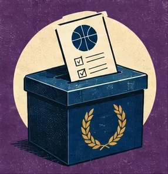

When the Voters and the Model Disagree
The voters and the model picked different MVPs in 15 of the 26 seasons from 1999-00 to 2024-25. Here’s what the voters were valuing.

The Bulls won 62 games in 2010-11 and Derrick Rose, at 22, produced the youngest player to ever be named MVP, receiving 98% of the available MVP points. The model ranked him 28th in that year’s league. Since 1999-00 this has been the largest difference.
Each year a group of 100 journalists and media personalities vote on the MVP and the fifteen All-NBA players. Basketball Reference provides an award tracker, ranking each season’s candidates with a model built on past ballots, to predict who will win.
The rules
As above, the model names the player with the highest total mWAR across the set of games in which they featured, and the top 15 for the All-NBA.1
There are many more obvious considerations for the voters (e.g. identifying the opposing side’s defensive focus, final minute heroics etc.) that the model cannot make use of.2 I’m from Boston, and last season’s biggest split runs through a Celtic and a former one.
Twenty-six MVPs
The model and the voters agreed on the MVP in 11 of the 26 seasons from 1999-00 to 2024-25. The model named Kevin Garnett MVP for the next five consecutive years, between 2002-03 and 2006-07, and the voters’ once, in 2003-04. The model chose LeBron James on eight occasions, against four from the voters. Finally, the model has returned Nikola Jokić as MVP every season since 2018-19, while the voters have voted for him three times.
| Season | Voters’ MVP | Model rank | Pts | Wins | Model’s MVP | Pts | Wins |
|---|---|---|---|---|---|---|---|
| 2000-01 | Allen Iverson | 21 | 31.1 | 56 | Tim Duncan | 22.2 | 58 |
| 2002-03 | Tim Duncan | 2 | 23.3 | 60 | Kevin Garnett | 23.0 | 51 |
| 2004-05 | Steve Nash | 9 | 15.5 | 62 | Kevin Garnett | 22.2 | 44 |
| 2005-06 | Steve Nash | 6 | 18.8 | 54 | Kevin Garnett | 21.8 | 33 |
| 2006-07 | Dirk Nowitzki | 6 | 24.6 | 67 | Kevin Garnett | 22.4 | 32 |
| 2007-08 | Kobe Bryant | 5 | 28.3 | 57 | LeBron James | 30.0 | 45 |
| 2010-11 | Derrick Rose | 28 | 25.0 | 62 | LeBron James | 26.7 | 58 |
| 2013-14 | Kevin Durant | 3 | 32.0 | 59 | LeBron James | 27.1 | 54 |
| 2014-15 | Stephen Curry | 2 | 23.8 | 67 | Chris Paul | 19.1 | 56 |
| 2016-17 | Russell Westbrook | 7 | 31.6 | 47 | Stephen Curry | 25.3 | 67 |
| 2017-18 | James Harden | 6 | 30.4 | 65 | LeBron James | 27.5 | 50 |
| 2018-19 | Giannis Antetokounmpo | 7 | 27.7 | 60 | Nikola Jokić | 20.1 | 54 |
| 2019-20 | Giannis Antetokounmpo | 6 | 29.5 | 63 | Nikola Jokić | 19.9 | 52 |
| 2022-23 | Joel Embiid | 3 | 33.1 | 54 | Nikola Jokić | 24.5 | 53 |
| 2024-25 | Shai Gilgeous-Alexander | 2 | 32.7 | 68 | Nikola Jokić | 29.6 | 50 |
Note that the model rank denotes the position of the voter-selected player in the model’s ranking. Pts and Wins denote their ppg and team win rate (per 82 games) respectively.
Since Rose, the next greatest divergence was in Allen Iverson of 2000-01, with the model placing the player 21st. In twelve of the fifteen splits the voters’ selection was within the model’s top 7.
Drivers of the voters’ selections
Across the fifteen splits the voters’ MVP averaged 27.2 ppg, compared to the model’s selection’s 24.1. Their respective teams went on to achieve 60 and 50 wins per 82 games. The voters’ MVP out-scored the model’s in eleven cases and led his side to superior records in thirteen. There were no exceptions to this.
During 2017-18, Giannis Antetokounmpo had an mWAR of 14.9 and Jrue Holiday 14.8, i.e. relatively similar under the model. However the voters returned 71% of their total pool of points to Antetokounmpo and 0% to Holiday. Their respective ppg was 26.9 and 19.0, and the New Orleans Pelicans out-performed the Milwaukee Bucks by four games. Repeating the exercise with the top 60 players by mWAR in each season, 1,558 player-seasons, we can estimate that the voters implicitly assign ~0.5 mWAR to 1 extra point and ~1.7 mWAR to 10 additional team victories.3 Five further points are roughly equivalent to moving from the 10th to 20th best player in the league.
It would appear therefore that there is little incremental value to be gained from simultaneously adding and subtracting 30 points. Moreover, ppg and team record are the most readily-determined metrics in basketball. A plus-minus rating, by contrast, is noisy.4
2025-26
This was borne out last year. The model had Nikola Jokić 1.9 mWAR ahead of Shai Gilgeous-Alexander. Gilgeous-Alexander out-scored him by 3.4 points (31.1 vs 27.7) and his side finished ten games clear. Using the voters’ conversion, this equates to 3.5 mWAR. He went on to collect 94% of the available points.
| All-NBA | Player | Model rank | mWAR | Salary | Surplus |
|---|---|---|---|---|---|
| 1st | Nikola Jokić | 1 | 19.6 | $55M | +$126M |
| 1st | Shai Gilgeous-Alexander | 2 | 17.7 | $38M | +$128M |
| 1st | Victor Wembanyama | 3 | 13.9 | $13M | +$120M |
| 1st | Luka Dončić | 6 | 12.7 | $46M | +$77M |
| 1st | Cade Cunningham | 14 | 9.3 | $46M | +$47M |
| 2nd | Kawhi Leonard | 4 | 13.6 | $50M | +$82M |
| 2nd | Donovan Mitchell | 5 | 13.0 | $46M | +$80M |
| 2nd | Kevin Durant | 7 | 12.4 | $55M | +$66M |
| 2nd | Jalen Brunson | 9 | 10.4 | $35M | +$68M |
| 2nd | Jaylen Brown | 85 | 4.1 | $53M | −$9.7M |
| 3rd | Chet Holmgren | 10 | 10.3 | $14M | +$89M |
| 3rd | Tyrese Maxey | 11 | 10.2 | $38M | +$63M |
| 3rd | Jamal Murray | 12 | 9.7 | $46M | +$50M |
| 3rd | Jalen Johnson | 37 | 6.5 | $30M | +$36M |
| 3rd | Jalen Duren | 72 | 4.7 | $6.5M | +$42M |
Where the voter’s All-NBA pick falls outside the model’s selection of 15, the model rank is shown in bold. Players’ surplus (i.e. their value over salary, 2025-26) is included.
Of the three players selected by the voters only to fall short of the model’s ballot, 23.6 ppg were averaged. The model’s corresponding set of three yielded 18.9. Notably, one of the voters’ three was Jaylen Brown (2nd team, 6th for MVP), who the model placed 85th. On a max contract he was worth $9.7M less than he was paid, and Boston traded him to Philadelphia in July. I wanted them to keep him, for reasons that aren’t in this table. One of the model’s choices, Derrick White, made the All-Defensive 1st team. I’d like it noted that he’s a Celtic.
Data from the board (1999-00 to 2025-26, current version); Basketball Reference for awards, ppg and win totals. Wins are on this model’s own scale and dollars at the open-market price of a win; the method explains both.
- Recall that mWAR measures a player’s excess contribution relative to a minimally-contractible player. There is no positional weighting applied to the model’s All-NBA, consistent with current practice. mWAR is computed as a player’s mPM multiplied by their playing time. Further comparison with alternative metrics is given here. ↩
- A star’s rating carries an error of about 0.84 points per 100 possessions, two or three wins over a season. ↩
- Obtained via least-squares regression of the proportion of the All-NBA points awarded to each player against his mWAR, ppg, team wins (per 82 games) and number of games played. Bootstrapping individual seasons 2,000 times gives a central 90% CI of 0.46 to 0.61 mWAR and 1.5 to 1.9 per 10 additional team wins. Number of games played drops out of the equation when controlling for mWAR. ↩
- If points and team record are captured in the player’s on-court performance, there is no reason to double-count them. Conversely, if one metric is highly uncertain, relying on others may be prudent. ↩